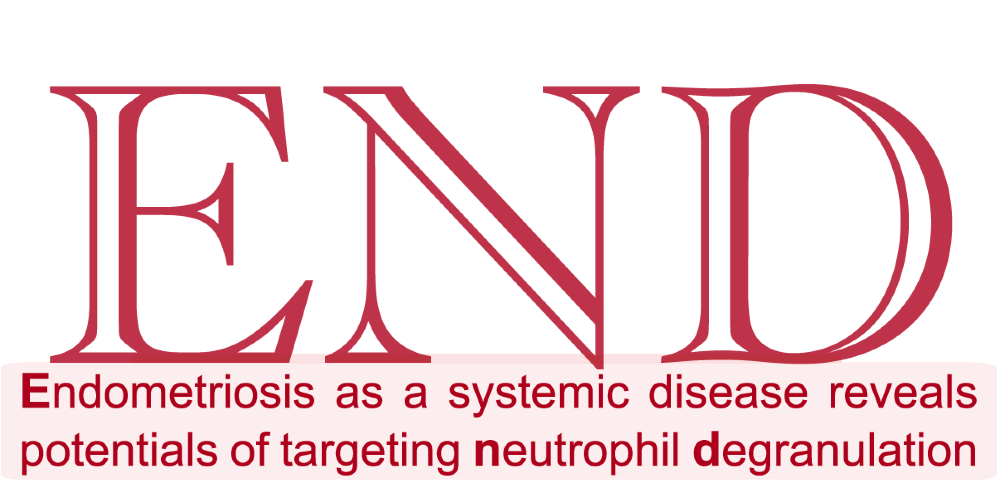

Genomic evidence supports the recognition of endometriosis being an inflammatory systemic disease
Section 1 Overview

Motivation: Endometriosis, traditionally viewed as a chronic disease restricted to the pelvis causing pelvic pain and infertility, is increasingly recognised as a systemic disease with multi-organ effects (see this review).
Approach: We reinforce the evolving concept of endometriosis as a systemic disease, in light of genomic evidence/prioritisation leveraging genome-wide associations in disease, regulatory genomics in disease-relevant cell types, states and tissues, and the knowledge of gene interactions. Done so through adapting our recently established genetics-led target prioritisation approach (Priority index) applied to summary data from genome-wide association studies in endometriosis (for example, the most recent), which generated a ranked list of >14,000 prioritised targets.
Findings: Target genes at the leading prioritisation reveal cellular basis and molecular hallmarks that are consistent with systemic disease manifestations. Pathway crosstalk-based attack analysis identifies the critical gene AKT1, and in the context of this gene, further identifies genes (including ESR1) that are already targeted by licensed medications in other diseases (see Pathway crosstalk). Cross-disease prioritisation map enables identification of shared and distinct targets between endometriosis and autoimmune diseases (see Cross-disease comparisons). Shared target genes support repurposing opportunities of immunomodulatory drugs (see Cluster C6), while endometriosis-specific genes suggest therapeutic potentials of targeting neutrophil degranulation (see Cluster C5).
Conclusion: Our results, together with target prioritisation atlas made available at https://23verse.github.io/end, may be of translational use for better treatments in patients with endometriosis. Please email us for more information.